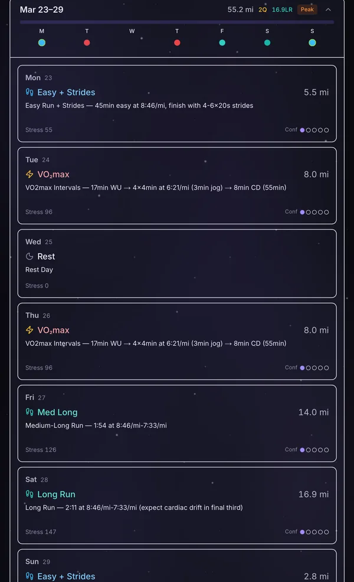
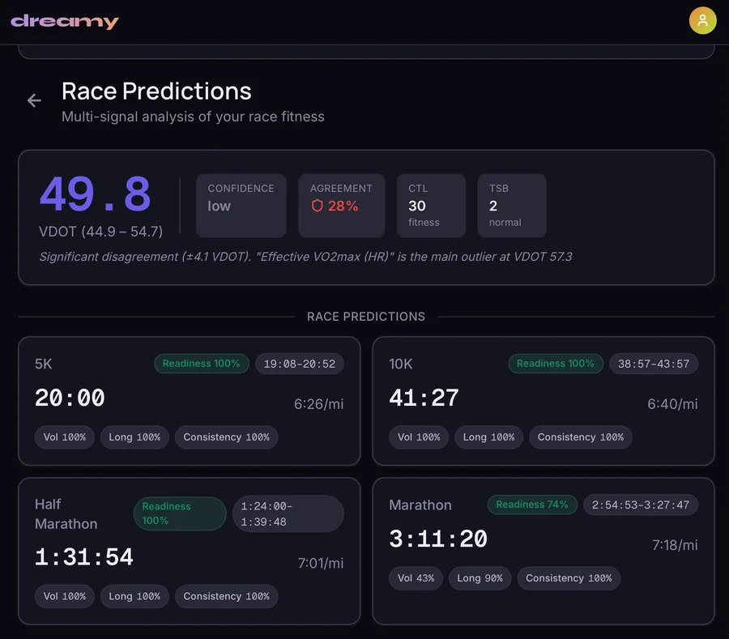
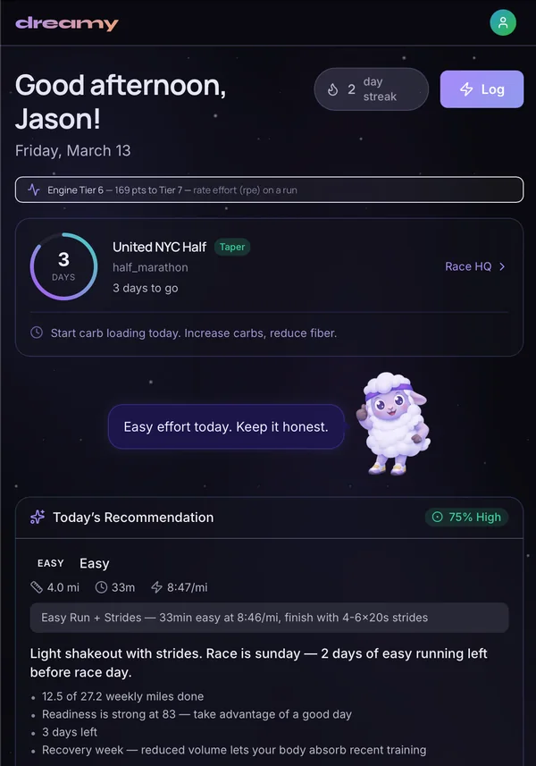
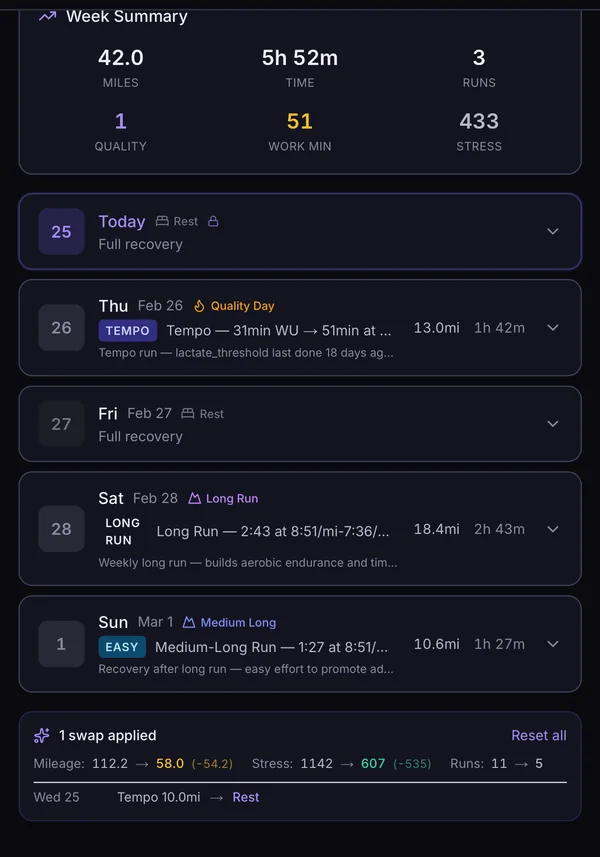
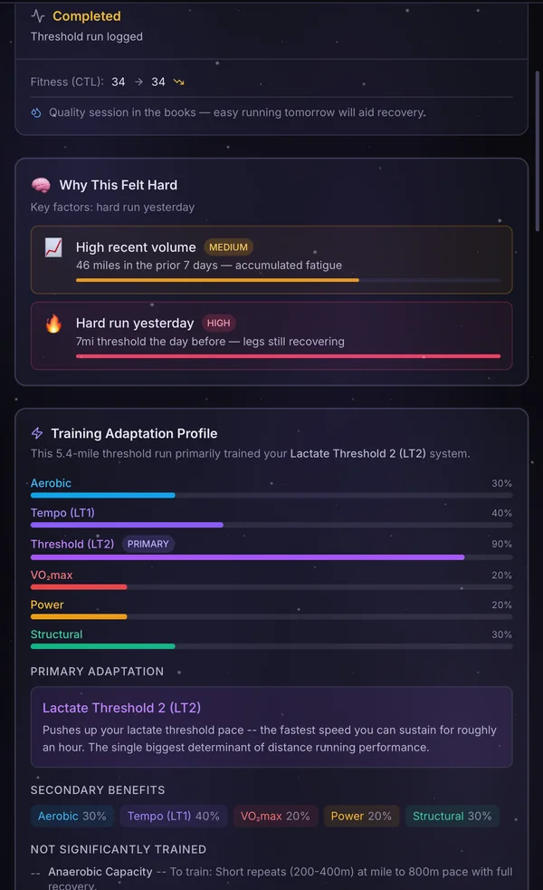
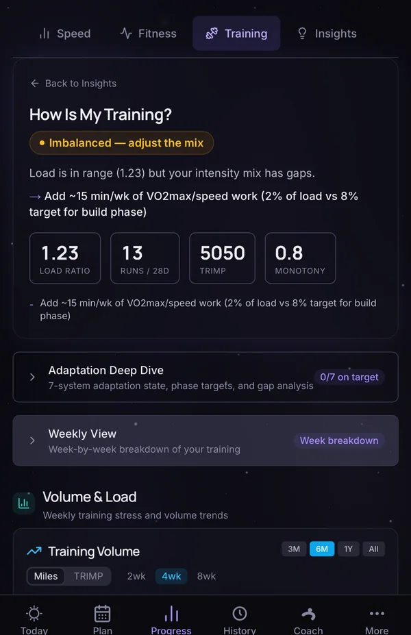
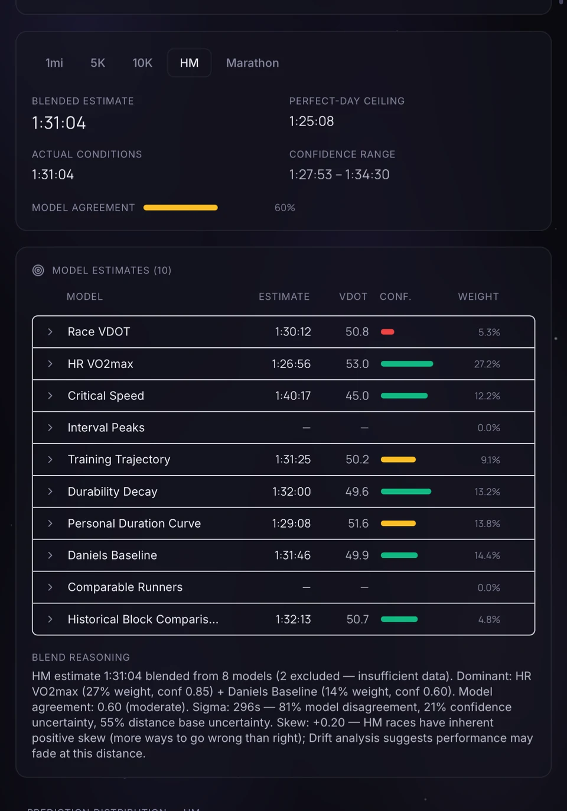
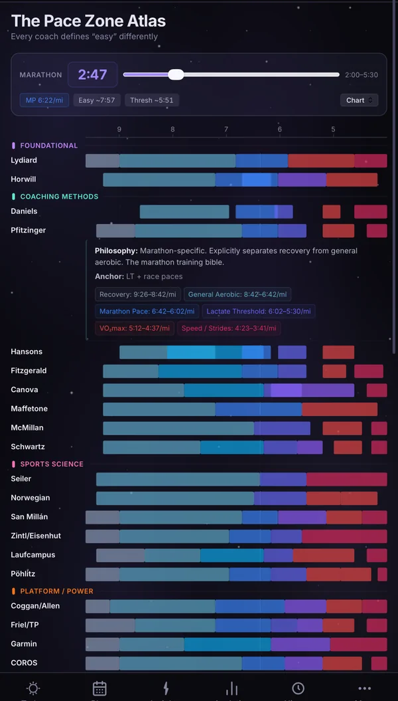

How I built Dreamy
Dreamy is an AI running coach I built with Claude Code over twelve weeks while I was still working full time at Morgan Stanley. It's for people like me who don't have a reliable 9 to 5, have a busy social life, and still want to run their best marathon. It's technical on purpose: it explains the science behind each workout so you learn to coach yourself, not just follow a plan. It started as a ChatGPT prompt I used to coach myself through my second marathon, when work got busier and my back was acting up. The models kept giving me bad plans, so I read up on sports science and the top running coaches and kept rewriting the prompt until the answers got good. As the models got better I needed less of the prompt, but I wanted more than a prompt could do. Nothing checked it against the research, you had to be really good at prompting to get something usable, and it didn't sync with anything or look at your actual runs. Dreamy's plans come from rules taken from the research, it analyzes every run you sync from Strava, and it works around the days you can't run.
Try it: tap the days you can't run
A simplified version of Dreamy's scheduling rules, running in your browser.
This is a simplified copy of Dreamy's week-skeleton.ts and mileage-enforcement.ts. Weekly totals land within about a mile of the target. It places runs in the same order, keeps the same 48 hours between hard days and uses the same mileage rules, and easy days stay at or under 80 percent of the long run. In the app you set how many runs and quality sessions you want each week; here they follow the weekly miles (4 runs and one quality session at 25 miles or less, up to 7 runs above 50). The real app also looks at your fitness, fatigue, the weather and your recent runs before it picks each workout.
How the week gets built
Dreamy rebuilds the week in the same order every time, based on what you actually ran and which days you have.
- Days you can't run come off first. Everything else gets planned around them.
- The long run goes on your preferred day. If that day is gone, it moves to the other weekend day, then to the nearest open day.
- The day after the long run is a recovery run.
- Quality sessions go on your preferred days, never next to the long run, at least 48 hours apart, and never longer than the long run. If those days are gone, they move to any open day that fits. Once Dreamy has learned how fast you recover, it uses your recovery time instead of 48 hours.
- Other open days get easy runs until you reach the number of runs you set for the week, and the rest are rest days. That's how you can get four runs one week and seven the next.
- Miles are rebalanced to hit the weekly target. Easy days take the changes first, up to 3 miles each, and no run goes below 2 miles. Quality days and the long run change last. If there's no way to hit the target, it tells you instead of overloading the runs you have.
Then the daily engine picks the actual workout for each day from 133 templates. It simulates seven training systems one day at a time and redoes the rest of the week every day based on what you actually ran.
A few safety rules override everything else. You get a forced rest day after 14 straight days of running, when you say you're sick, or when your readiness drops below 25 out of 100. The day before a race is a shakeout of 4 miles or less, and there's nothing hard in the three days before it.
When a run syncs from Strava, Dreamy asks why it went the way it did before it changes anything. If it was the heat or bad fueling, the plan stays the same. If your legs were heavy, it cuts the next day by 20 percent and adds more time before the next hard session. Every change shows what moved, and you can undo it.

The engine
For a few weeks in February an LLM was writing parts of the plan. It was expensive and it wasn't reliable, so I moved every training decision into regular code. I wanted LLM costs under $5 a month per runner, and I wanted the same data to always give the same plan. Now the LLM only talks to you about it.
In
Your data
- Strava runs, heart rate streams and laps
- HRV and resting heart rate from Intervals.icu
- Weather for every run
- Check-ins: sleep, soreness, days off
Per run
Run pipeline
- Classifies the run and detects intervals
- Training load, zones, efficiency, decoupling
- Mines best efforts for the forecast
State
Athlete state
- Fitness and fatigue, 42 and 7 days
- Seven adaptation systems
- Fitness signals and readiness
Decide
Daily engine
- Week skeleton and mileage rules
- Workout optimizer over 133 templates
- Safety overrides
- Race forecast
Talk
LLM coach
- Claude, routed by question
- 96 tools that call the engine
- Explains, answers, makes changes you ask for
Seven training systems, and how fast each one builds and fades
Each system builds and fades at its own speed, and the speeds come from the research. VO2max builds over about 28 days and fades over about 49. Tendons and bones are the slowest both ways.
How much you get out of a workout depends on how ready you were. On a bad day the model only counts 40 to 70 percent of the workout, so a slog doesn't count as full training.
Time constants in days, from simulator/constants.ts: build then fade. Aerobic efficiency follows Granata 2016, VO2max follows Mujika & Padilla, musculoskeletal follows Magnusson 2010.
Race forecasting
Most apps give you one predicted race time from one method. Dreamy runs a bunch of separate models, weights each one by how much evidence it has, and shows you how much they agree. This is my own half marathon forecast from March.
Half marathon forecast by model
My half marathon forecast as the app showed it in March 2026: ten models, eight with enough data to vote, with HR VO2max carrying the most weight. By April the engine ran nine live models plus a durability adjustment.
Each model gives an estimate, how confident it is, why, and what data would make it better. Its weight is a base weight times that confidence. Models that drift away from your actual races lose weight, and too-optimistic ones lose it faster: a model 8 percent faster than your races gets zero weight, while a slow one gets there at 10 percent. Models that use the same inputs don't count as separate votes when the range is worked out.
The anchor is a small meta-analysis of your own races, pooled with random effects (Paule-Mandel, with the Hartung-Knapp correction). A race that went wrong counts as censored data, and old races you've since beaten count as floors so they don't drag the estimate down.
The range comes from six named sources of uncertainty, and it leans slow because more things go wrong on race day than right. The fast end is your perfect-day time. The weights were still set by hand when the main build ended. The part that would tune them against real race results wasn't running yet.

The research
I wanted every rule in the engine to trace back to a source. I ran the research through ChatGPT and Gemini deep research and Claude at the same time, compared what they found, had them check each other, and gave them a ton of direction from my own running. Claude Code turned the results into reference docs in the repo before building anything, and for the forecast nothing got built until I signed off. Then I had Codex audit the code over seven rounds.
- Dreamy is a ChatGPT prompt I keep rewriting as I train, starting with my second marathon.
- First commit. The prompt becomes an app.
- Same research question to Claude, Gemini and ChatGPT. I merge the three answers with my roadmap.
- I decide to move every training decision into code. The LLM just talks.
- Pace Zone Atlas: 22 coaching systems' zones on one axis.
- Seven-system simulator with research-backed constants. Single-run spike detection replaces the acute:chronic workload ratio.
- Deep research reports on training adaptation and race forecasting.
- Multi-model review of the forecast and a redesign plan.
- Race anchor research: 15 questions to three sources. I sign off before any code.
- Codex audit, rounds 1 to 7.
- Last commit.
In the engine
- Daniels & GilbertVDOT and training paces
- PfitzingerPeriodization and recovery hours by workout type
- Hansons16-mile long run cap and cumulative fatigue
- CanovaRace-specific work at 95 to 105 percent of goal pace
- Seiler 2010, FitzgeraldThe 80/20 intensity split
- Bowerman48 hours between hard days
- Banister 1975Fitness and fatigue with 42- and 7-day time constants
- Mujika & Padilla; Granata 2016How fast fitness fades
- Joyner & Coyle 2008Threshold capped at 85 to 90 percent of VO2max
- 5,200-runner cohort, BJSM 2025Injury risk from single-run spikes
- Ely 2007; El Helou 2012Heat and dew point slowdown, scaled by ability
- Minetti 2002The energy cost of hills
- Riegel 1981; Tanda 2011Race-time models
- Paule-Mandel; Hartung-Knapp; TukeyStatistics for the race anchor
What the research threw out
- The acute:chronic workload ratioCriticized in the literature; replaced by spike detection on single runs.
- The 10 percent ruleNo evidence behind it; replaced by tunable ramp caps and down weeks.
- A fixed Riegel exponentRuns too fast at the marathon; replaced by exponents per distance pair.
- A single training-stress numberReplaced by seven systems that each build and fade at their own speed.
- Reinforcement learningDeferred until there's a safe way to evaluate it offline.
How I built it
Claude Code wrote the code. I decided what the engine should do, did the research behind it, and checked whether its plans actually held up. To tune it I ran real runners' training histories through it, had LLMs grade the plans against the research and suggest rule changes, and reviewed every round myself.
I set the repo up for working with AI. A CLAUDE.md sets the rules, like keeping the engine away from the database and never rewriting the VDOT math. When I corrected something, it went into a lessons file as a new rule. A test fails the build if any API route doesn't say who's allowed to call it, and every change runs type checks, lint, all the tests and a production build.
From the repo, as of the end of the main build: 1,985 commits between January 28 and April 20, 95 percent of them co-authored with Claude; about 16,000 automated tests in 281 files; 63 database tables; 96 tools the coach can call; and 133 workout templates.
What I learned from the beta
- Heart-rate VO2max can flatter you.One runner's heart-rate model said VDOT 54 while their races said 46 to 48. Now any estimate that runs way ahead of real races gets set aside.
- Most of the early bugs were in the data, not the models.One runner's import quietly failed on 922 of 1,211 runs.
- Plans have to know about races.After a race, one plan jumped 30 percent in mileage. The week after a race is now capped at a 15 percent increase.
- Related fixes have to ship together.One runner's forecast only came out right once four model fixes landed at the same time, so model changes now go out together.
How it compares
Here's how it compares with the other apps, a plan from ChatGPT, a human coach and a book plan, based on each company's own help and pricing pages as of September 27, 2026. The others are ahead on watch apps, strength plans, real human coaching and scale. Dreamy is a web app that syncs with Strava.
| Option | Days you can't run | Explains why | Race forecast | Price |
|---|---|---|---|---|
| Dreamy | Rebuilds the week around them; run days flex from 4 to 7 | Each day carries the rule that set it; the coach answers follow-ups | Several models blended, with agreement and a range | Private beta |
| Runna | Skipping adapts the plan; after more than three misses it asks how to realign. Moving runs is manual. | Explains pace changes; AI feedback after runs | One undisclosed model, with a range | $19.99/mo |
| Garmin Coach | Adapts going forward from runs, sleep and readiness; users report missed workouts can't be rescheduled | Templated what, how and why on each workout | One model from VO2 max and history, a single time | Free with a watch |
| TrainAsONE | Regenerates the whole plan overnight; blocking a day rebuilds it | No per-workout explanation documented | Machine learning on your history; no range documented | Free tier; £9.99/mo |
| TrainingPeaks | Manual drag and drop | Coach notes, if you have a coach | No predictor; a fitness chart instead | $19.95/mo |
| ChatGPT plan | You re-prompt it; the new plan can contradict the old one | Explains confidently, but nothing checks it against the research | A guess, with no model behind it | $20/mo |
| Human coach | Yes, by hand, as often as the package allows | Yes | Judgment | ~$150 to $180/mo |
| Book plan | No; a fixed schedule | Explains the method, not your week | Static tables, like Daniels' VDOT | $20 to $30 once |
Built before the big platforms shipped it
| Feature | Dreamy | The big platforms |
|---|---|---|
| A coach you chat with that reads your training history | Feb 2026 | COROS connector for ChatGPT and Claude, May 2026. Google's Gemini health coach, May 2026. Strava's Claude connector, June 2026. |
| Training paces adjusted for heat and humidity | Jan 2026 | Runna, July 2026. My standalone heat calculator has been live since 2024. |
| Several forecast models blended, with an agreement score and a range | Mar 2026 | Not in Runna, Strava, Garmin or COROS as of September 2026. Each shows one model's number; Runna adds a range. |
| Pace zones compared across coaching systems | Mar 2026 | No app found as of September 2026. |
Why I stopped after the main build
I wrapped up the main build in April. I still tinker with it and use it to make training plans, but I haven’t pushed it past the beta. Over the next few months the big platforms started shipping things Dreamy already had. Google launched a Gemini health coach, Strava (which already owned Runna) launched a connector so Claude can read your Strava data, Runna added heat-adjusted paces, and Garmin bought TrainingPeaks. Strava alone has more than 180 million users.
That was part of why I didn't go further with it. The ideas held up, but a one-person app wasn't going to beat them on distribution. The part I'd do the same way anywhere is the process. I started from a problem runners actually have, turned the research into rules the code follows, and shipped it with Claude Code in twelve weeks.
Sources: Runna skipping, realignment, pace insights, predictions, pricing, heat update; Garmin adaptive plans, forum on missed workouts, explanations, race predictor, TrainingPeaks acquisition; TrainAsONE missed runs, blocked days, predictions, pricing; TrainingPeaks moving workouts, pricing; coaching costs; COROS connector; Google Health Coach; Strava connector, Runna acquisition. Dreamy dates are from the repository's commit history.
Screenshots





